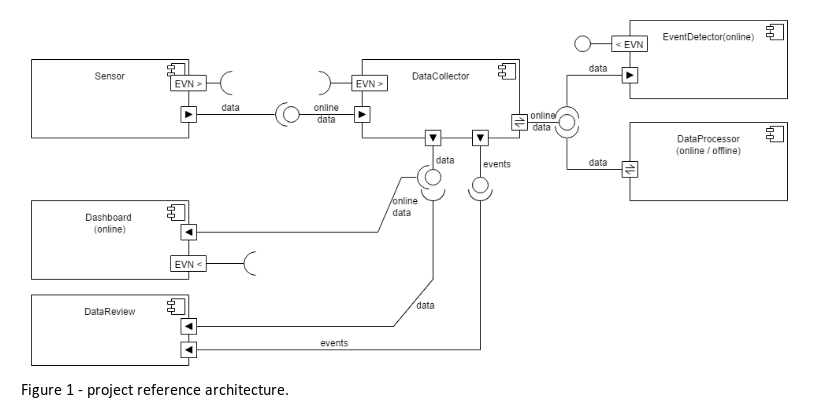

3- DEVELOPMENT¶
Arquitecture¶
- Frontend
- Done in JSF with PrimeFaces.
- Contains 4 dashboards with informations related to 4 sensors.
- It’s possible to verify the history of valores that have been saved, by requesting them to the DB.
- DB
- The database is done in JPA and receives all the values read by the sensors.
- This values are saved and can be sent to the Dashboard by websockets.
- DataCollector
- It represents the data received from the different sensors through the RabbitMQ.
- Architecture of the system.

Figure: Architecture of the system
Data Model¶
- External Events
- Sensors send the data to a RabbitMQ broker
- External Events for Datacollector
- Data arrives from RabbitMQ
- Forward it with specific messages to dashboard
- External Events for Dashboard
- Data arrives from datacollector
- Process it
- Send it to dashboard
- Check for values above threshold
Sensor’s values¶
| Number | Name | Type |
|---|---|---|
| 1 | Temperatura dos Narcisos | ºC |
| 2 | Humidade da Cave | % |
| 3 | Luminosidade da Estufa | lux |
| 4 | Sensor de Fumo | ppm |
Deployment¶
The deployment is processed by Jenkins. It is autonomous and it develops all the containers and puts them online. Our project contains the following containers:
- ELK
- ElasticSearch
- Logstash
- Kibana
- POSTGRES DB
- RabbitMQ
- JSF Dashboard
- Tomcat for the gateway
- JPA
- Processing Unit python